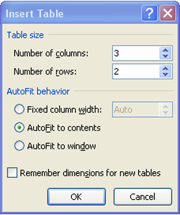
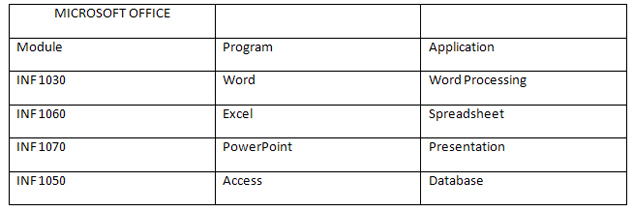
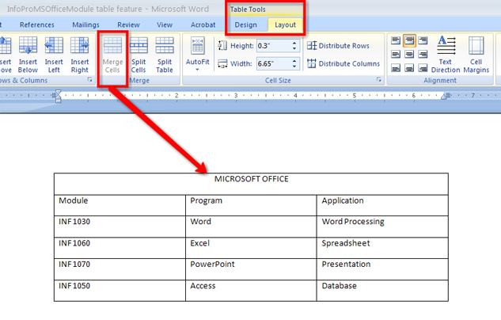

Training Room 5—Tables
Time to Practise
Now that you have an understanding of how to create tables, the practice activities below will help you apply your knowledge.
Practice 1
In this practice, you will be asked to create the following table by setting and using Left, Center, and Right tabs with provided content. You may go back to the demonstrations and check steps if you need assistance.
- Open a new, blank Microsoft Word® 2007 document.
- Save the document as “Table 1” in your INF1030: WP1: Tables folder.
- Create and format the following table using tabs.
- Make sure your line spacing is set to single (Home tab, Paragraph group in the ribbon).
- Set the following tabs on your ruler or using the Tab dialog box: Left tab .5”; Center tab 3”; Right tab 6”.
- Type the title: “MICROSOFT OFFICE” — bold, centre, uppercase.
- Hit the Enter key twice to leave one blank line between the title and the subtitle.
- Type the subtitle: “Information Processing” — centre, Capitalize Each Word.
- Hit the Tab key to move the cursor to the first tab setting.
- Enter the column headings: “Module,” “Program,” and “Application,” using the Tab key to move to each column.
- Enter the body text for the table using the Tab key to move to each column. Use normal type for the body (not bold).
- Centre the table vertically on the page using the Page Layout group: click the Page Setup dialog box and select the Layout tab.
- Use the Spelling and Grammar check and proofread the table to ensure the information is correct.
- Print Preview the letter to see it in its final form.
- Save your document.
Practice 2
In this practice, you will be asked to create a table by using the Table function with provided content.
- Open a new, blank Microsoft Word 2007 document.
- Save the document as “Table 2” in your INF1030: WP1: Tables folder.
- Click the Insert Tab, Table button.
- Create a table with three columns and two rows. Select Autofit to Contents.

Microsoft product screen shot(s) reprinted with permission from Microsoft Corporation.
- Practise inserting an additional four rows to the table after it has been created. (You might want to review the demonstrations if you have forgotten how to do this.)
- Enter the following information into your table.

- Select all three columns in the first row of the table and, in the Table Tools tab, select the Layout tab, then select Merge Cells. The three cells merge into one cell.

Microsoft product screen shot(s) reprinted with permission from Microsoft Corporation.
- In the Table Tools Layout tab, adjust the alignment of your text in the cells to center.
- Bold the title and column headings in your table.
- Use the Table Tools, Design tab to apply Shading to the title row and a complimentary shade to the column headings row.
- Centre the table horizontally on the page using the center button in the Paragraph group or Ctrl + E.
- Vertical-centre the table using the Page Layout tab — look for the Center button in the Alignment group.
- Spell check and proofread the table to ensure the information is correct.
- Make any formatting adjustments you feel are necessary to enhance your table.
- Print Preview the table to see it in its final form.
- Save the document.
Practice 3
In this practice, you will create an attractively formatted contact list for a minimum of five friends using a table. You can create your table by setting the tabs or you can use the Table command — the choice is yours. Your address book table must meet the following criteria:
- Include a table title and appropriate column headings. You must include at least four columns of information, but you may choose to include more. Some suggestions for column headings are phone numbers, birthdays, email addresses, street addresses, or any other important, appropriate information.
- Format to your table to make it visually appealing.
- Horizontal- and vertical-centre the table on the page.
- Save the document as Table 3 in your INF1030: WP1: Tables folder.